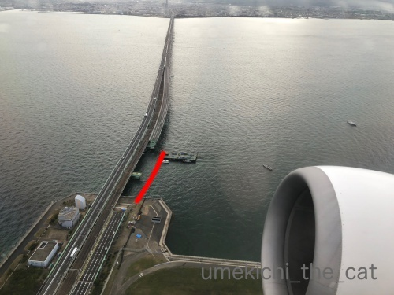
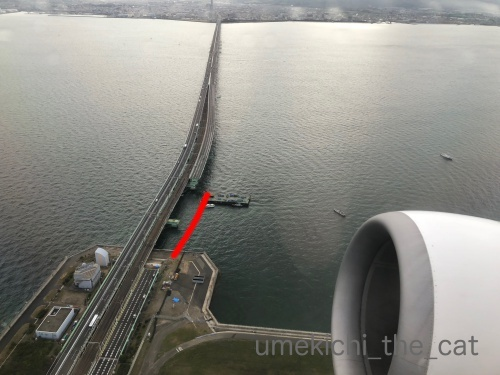

魔女か悪魔か ハロウィンの憂鬱（？） [梅吉]
梅吉さんの目下の悩みは

魔女さんになるか

悪魔くんになるか。

![[猫]](https://blog.ss-blog.jp/_images_e/101.gif) それが もんだいやで なやましいわぁ・・・
それが もんだいやで なやましいわぁ・・・
せやなぁ あくまみたいな おかおせな あかんやろか・・・
こまったで かわいいおかおしかできひん
・・・・・・・・・・・そうですか？

こんなんとか

こんなんぴったりですけど！

わしあくまがおなんか・・・

これもいい感じですよ！
画像加工しなくてもよこしまな感じが出てます( ´艸｀)
 ↑ガブッと一押し↑
↑ガブッと一押し↑
おっとが関空から札幌へ。

船がぶつかっていた連絡橋、離陸直後にこんな風に見えたそうです。
赤い線のあたりが船がぶつかった所です。すっぽり取り外してあります。
電車からはこんな風に見えるようですよ。
（24秒です）
こんな風に一部分を取り外しても他の部分に影響って無いものなのですね。
船が橋にめり込んでいるニュースを見たときは
連絡橋全体が来年くらいまで使えないんじゃないかと思ったものですが
電車は通常運行だし車道は対面通行ではありますが普通に使えています。
こちらは北海道 厚真付近の上空。
茶色いところは全て山崩れの箇所と思われます。
こんなに広範囲だなんて・・・
人の暮らしが正常化するにも時間が掛かりますが
自然が元の姿に戻るにも相当時間が掛かりそうです。

魔女さんになるか

悪魔くんになるか。

こまったで かわいいおかおしかできひん
・・・・・・・・・・・そうですか？

こんなんとか

こんなんぴったりですけど！


これもいい感じですよ！
画像加工しなくてもよこしまな感じが出てます( ´艸｀)
おっとが関空から札幌へ。

船がぶつかっていた連絡橋、離陸直後にこんな風に見えたそうです。
赤い線のあたりが船がぶつかった所です。すっぽり取り外してあります。
電車からはこんな風に見えるようですよ。
（24秒です）
こんな風に一部分を取り外しても他の部分に影響って無いものなのですね。
船が橋にめり込んでいるニュースを見たときは
連絡橋全体が来年くらいまで使えないんじゃないかと思ったものですが
電車は通常運行だし車道は対面通行ではありますが普通に使えています。
こちらは北海道 厚真付近の上空。
茶色いところは全て山崩れの箇所と思われます。
こんなに広範囲だなんて・・・
人の暮らしが正常化するにも時間が掛かりますが
自然が元の姿に戻るにも相当時間が掛かりそうです。
2018-10-22 00:00
nice!(62)
コメント(25)

カフェオレ色の梅吉

梅吉 2023年8月10日 永眠


梅吉と出会った譲渡会

犬猫の理由なき殺処分ゼロ
妄想広告
UMEKICHI 光

爆発的に早い！
時々攻撃的！
Thanks to Mr.Boss365
爆発的に早い！
時々攻撃的！
Thanks to Mr.Boss365

わー! 梅吉さん2種類も用意してもらったのですね。可愛くってどちらかに絞れないんですね。うんうん。どっちも良いです。
北海道の山が全部崩れてる様子は衝撃でした。今までこんな崩れ方は見たことなかったですよね。
by zombiekong (2018-10-22 01:49)
被って写真撮らせてくれるなんて
協力的な良い子＾＾
by ぽちの輔 (2018-10-22 06:17)
梅吉さん、大人しいのかにゃあ～^^
どちらもお似合いですよ^^
by ニコニコファイト (2018-10-22 06:54)
梅吉さん、「魔女」も「悪魔」もどちらもお似合いですよぉ( ^ω^ )
「悪魔」くんのチラ見せ牙写真が可愛い=(^.^)=
こうやってイベントに一緒に参加してくれるって
梅吉さんってば「出来る大人の漢」ですねぇ( ´ ▽ ` )ﾉ
by ニッキー (2018-10-22 08:17)
あらぁ~可愛い梅吉さん♪
これは選べないですねぇ~
協力的で羨ましいです！
梅吉さんを見て・・・Ｌｅａにも・・・
と思い・・とりあえず１００均で買って来ましたが
大変なことになりそうです(;^_^A
by きぃ (2018-10-22 11:08)
おはようございます。
梅吉君！！魔女さんも悪魔君も良い感じで似合ってます。
魔女さん？ちょっと中東系・怪しい感じもありますが・・・
アラジンの魔法使い？イメージかな？協力的な梅吉君が羨ましい。
連絡橋の修繕・修理、凄いです。
色々想定して設計・建築していると思いますが・・・費用？莫大な感じです。
北海道の山崩れ、上空写真で見ると、広範囲になってます。
自然・地震の脅威を感じます！？(=^･ｪ･^=)
by Boss365 (2018-10-22 11:22)
梅吉さん
魔女デビュー、悪魔デビュー（笑）
お疲れ様です。
どちらも誂えたようにピッタリお似合です。
おかーさんが、手に何か持って現れると、
梅吉さんは大人しく観念するのでしょうね（笑）
連絡橋は片側車線ですか？
厚真付近、ニュースでも驚きましたが、広範囲ですね。
島原の普賢だけの噴火跡を見に行きましたが
火山灰に埋まっている民家を見ると涙が溢れました。
防ぎようのない自然の脅威を感じました。
by kiki (2018-10-22 11:58)
梅吉さん、ほんとに親孝行な猫さんだにゃ～(#^^#)
またおとーさんがいそいそと買ってこられたのでしょうか^^;
どっちも似合ってるけど・・・個人的には悪魔が好き、黒い耳（角？）がかわいいです♪
関空連絡橋、この状態で使えるんですね！ すごいな～。
厚真の山崩れもそうですが、想定外の災害が今年は山ほど。
自然の驚異には敵わないとしみじみ感じます。
by ゆきち (2018-10-22 12:42)
金色のが高貴な感じにもみえるし似合ってる～！
梅吉さんのカラーととっても合ってるね！！
by yuppie (2018-10-22 13:17)
.....ヾ( 〃∇〃)ﾂ ｷｬｰｰｰｯ♪
可愛すぎて、エンジェルにしかみえないよ！
by Ginger (2018-10-22 13:18)
可愛い♪可愛い♪魔女さんも悪魔くんもどっちも可愛い♪
似合ってるし～。
でも・・・私は悪魔くんが好みかな～(*^-^*)
こんな可愛い悪魔くんなら大歓迎だし！って・・・
家にもうじゃうじゃ居たよ～ｗ
by emi (2018-10-22 13:56)
こんなに撮影させてくれるなんて梅吉くんいい子ですね～(^.^)
どっちもかわいいですけど被ってる感満載の悪魔くん推しで(*´▽｀*)
by palpal (2018-10-22 14:27)
5～6枚目の写真が迫力満点ですね!
でも、本当にお利口さんに撮影させてくれましたね(^^)
by kou (2018-10-22 17:02)
よこしまな顔も可愛いっすよ！
インスタにも載せてほしい（笑）
by angie17 (2018-10-22 17:10)
梅吉さん、いろいろ被らされちゃってますね！
関空の橋は見事に外されていますね(^^)
早く復旧してほしいですね！
by ma2ma2 (2018-10-22 18:40)
zombiekongさん＞
なんか次々と被り物が家にやってきましたw
(おっとが買ってきたともいうw)
実はもう一つあるのですが頭にフィットしないのでボツ画像(^_^;)
北海道の山崩れ恐ろしいくらい綺麗に崩れていますよね・・・
自然の力の偉大さ恐ろしさを改めて感じました。
ぽちの輔さん＞
もうすっかり諦めの境地のようです (｡-_-｡)
ニコニコファイトさん＞
被り物には協力的なんですよ＾＾
はやく おわってくれへんかなぁ・・・ってwww
ニッキーさん＞
ありがとうございます！
梅吉はどうやら魔性の物が似合うようですwww
被り物に関してはもう諦めているようですよ。
特に逃げもせず付き合ってくれますが
嫌がるそぶりを見せたら即、終了。
あとは梅吉のおおらかさに助けられてます＾＾
きぃさん＞
どっちもそれぞれに面白似合っていてwww
Leaちゃんの被り物！それは楽しみです・・・って
無事に写真撮影出来たでしょうか( ´艸｀)
びりびりの刑になったのではないかと想像中(≧з≦)
Boss365さん＞
金ピカ系魔女さんですよね！
私も魔女というより何処かの国の少数部族の被り物みたいだ
と思いました(*>艸<)
被り物はあまり嫌がりもせず付き合ってくれますw
もちろん嫌がるぞぶりを見せたら即終了は徹底してますよ＾＾
連絡橋の工事は物流の重要拠点でもあるので
国がバーンとお金を出してくれるようです。
北海道には、どうなんでしょう・・・
kikiさん＞
魔物デビュー、立派に出来ましたwww
ガチャガチャの被り物シリーズは猫専用なので
（100均とかは犬想定）柔らかくフィットして
なかなかの被り心地のようですよ( ´艸｀)
３分間くらいは嫌がらないので
カラータイマーが点滅する前にちゃっちゃと撮影するのがポイントです＾＾
北海道の山崩れは自然での力じゃなければなし得ない造形になってますよね。
自然の力の大きさに驚くばかりです。
ゆきちさん＞
さすが！大当たりですw
おっとは魔女さん狙いだったらしく２回目に引き当てて
嬉しそうに帰ってきましたwww
かぶせる前は魔女が似合うはず！と思っていたのですが
赤い悪魔が予想以上にぴったりハマって笑っちゃいました。
別所でマントも見つけたのですが流石に無理と諦めました (^_^;)
北海道の山崩れはニュースの映像では見てましたが
写真で見るとまた違った驚きがありました。
自然の力の前に人間ができることは少ないですね・・・
yuppieさん＞
金色の魔女帽子は「映え」ますよね＾＾
高貴な感じ！？あらら・・・下僕、喜んじゃいますよ！！
Gingerさん＞
堕天使でも大歓迎です(^_－)☆
そういえば黒い羽もあるんだったわ・・・
emiさん＞
悪魔くん人気あります0(≧▽≦)0
横から見るとね、赤ずきんちゃんみたいで可愛いかったのよー！
もちろん悪魔のままでもかわいいんだけどw
emiさんちはキュートな悪魔くんだらけだねー。
いたずらするぞーって毎日楽しそう♪
palpalさん＞
被り物はすっかり観念してますw
悪魔くんは猫好きの心を捉えるのかしら・・・ってうか
やっぱり梅吉は悪魔ルックなんだwww
kouさん＞
やっぱり悪魔の被りものには悪魔顔ですよねー(≧▽≦)
被り物で顔もキメる、梅吉にはまだまだ修行が必要なようですw
angie17さん＞
この顔はなかなかの役者っぷりですよねw
おお！よこしまじゃない顔のはpostしたのですが
これは出してませんでした！！
ハロウィン当日にpostしちゃおうっかなー♪
ma2ma2さん＞
はい＾＾梅吉に頑張ってもらいました！
橋の復旧予定はまだ発表になっていませんね。
びっくりするくらい早かったりして！
by ちぃ (2018-10-22 20:55)
どの梅吉さんにしようかなあ。
悩んじゃいまス。^^;
山崩れ、ものすごい規模ですね。。。
by yes_hama (2018-10-22 21:36)
梅吉さんのかぶり物を違和感なく見ることができる様になりました。
梅吉さんも、慣れたものですね。
呆れてるのかもしれませんね^_^
by riverwalk (2018-10-22 22:06)
どっちも似合ってるけど顔は迷惑そうな感じだね（ﾟ□ﾟ）
by 英ちゃん (2018-10-22 23:20)
どっちもすてきですが、個人的には金ぴかセンセイに一票！（笑）
これ〜！全身タイツにしても似合いそう（*´艸｀*）
（こういうチュウジンいそう／笑）
連絡橋、みごとに欠けちゃいましたね。
海の上だし、修復もなかなか簡単にはいきませんよね。
関空なんて、普段から恐ろしい豪風ですから、これで台風なんて・・・
想像するだけでゾクっとします。。
by Ja-Kou66 (2018-10-22 23:45)
梅吉さん、似合いますねー！
被り物にも付き合ってくれて、なんていい子なんでしょ＾＾
ちょっと困った顔も微妙に変化していくのがまたツボ♪
金色魔法使いサン、術が決まらずに困っているみたい＾＾
天災の脅威は‥驚かされます。
山がこんなに崩れるなんて‥
by sana (2018-10-23 01:19)
うーむ。見事に遊ばれてるのに、ちゃんとポーズ決めてるのが
流石に大物の風格があります！
「よこしまな感じ」。まさしくー(≧∀≦)
by よーちゃん (2018-10-23 08:51)
可愛い〜〜〜素直な大物･･･アッハッハッはッハ楽しかった！私の笑い声聞こえましたか?･･･幸せでした！m(__)m アリガトォ(._.)オジギ
by 沈丁花 (2018-10-23 11:18)
もう、爆笑！！
梅吉さんには悪いけど、笑わずにいられませんでしたっ＼(^o^)／
これでもかっ！の、「どないしよ？」な困ったちゃん顔の数々……。
もう名作ですよーーー！
なかでも、一枚目が大・大・大好きです。
おかーさんに、ちゃんとお付き合い？する梅吉さん。えらいですっ♪
連絡橋、今はそんな風になってるのですね。
次から次へと災害続きでしたが、気が付けば日常に戻りつつある。
記憶を風化させないことも大事ですよね。
一日も早く、本来の日常に戻れますように。
これ以上の災害がありませんように（祈）
by morichan (2018-10-23 11:50)
yes_hamaさん＞
もう盛大に悩んでくださいませ！
魔女梅吉も悪魔梅吉も逃げも隠れもしませんから( ´艸｀)
ハロウィンの日にお気に入りのいでたちで現れた時には
おやつをはずんでくださいね！
riverwalkさん＞
さらに違和感がなくなるよう一生懸命コスプレさせなきゃ！！
付き合いの良い梅吉、
ちょっと楽しくなって来ているのかもしれませんw
英ちゃんさん＞
あらら・・・バレてますかw
でも付き合いの良い子なので頑張ってくれてます ( ´艸｀)
Ja-Kou66さん＞
金ぴかセンセイ・・・金八先生シリーズにいたら楽しそうですね！
資産持ちで働く必要ないんだけど先生になってみた、みたいなw
連絡橋は一部分の取り外し可だったんだ！とびっくりです。
作った時の反対の工程ではあるんでしょうけど
この手の事に全く知識がない私には衝撃でした。
関空は浸水、強風など災害の多い我が国には
あるまじき立地だと改めて思いました。
ここが物流の動脈というのも怖い話です・・・
sanaさん＞
どちらもなかなか似合うでしょ♪
悪魔の方はあまり期待してなかったんですが
予想外に似合ってしまって・・・(*>艸<)
魔法使いさんは「魔法使い見習いの梅吉ともうします！」と
いつかsanaさんの街に降り立つかもしれないので
その節はよろしくお願いいたします(^_－)☆
山ってこんなに簡単にこんなに広範囲に崩れるものなんだ・・・
と驚きしかありません・・・
この辺り山菜が良く採れる地域でもあったのです。
春に車を走らせると無人販売所に山菜が並んで
のどかな地域だったのに。。。
よーちゃん＞
カメラを向けられたらブログ猫のプライドに火がつくんでしょうか！
ここはきめなあかんな、みたいに(*>艸<)
これからもいろんなポーズ＆表情にご期待くださいませ！！
（はい。被り物はこれからも登場しますw）
沈丁花さん＞
聞こえて来ましたよー！
楽しそうな笑い声、ありがとうございましたm(_ _)m
笑っていただいて幸せになっていただいて
梅吉も「おおきに」と喜んでおります！！
morichanさん＞
被せると嫌がる前に
「いま わしに なにがおこってるんやろ・・・」と
戸惑いの時間があるのですがその時の顔なんです！
で、その瞬間をバシャバシャと連写すると面白い顔の連続で・・・
梅吉GJ！！！
ここ数年は毎年のように色々な災害があって・・・
被災した地域のことも忘れることなく
自分がいつ被災してもなるべく困ることが少なくて済むように
備えもしっかりしなければと思っております。
by ちぃ (2018-10-24 18:01)